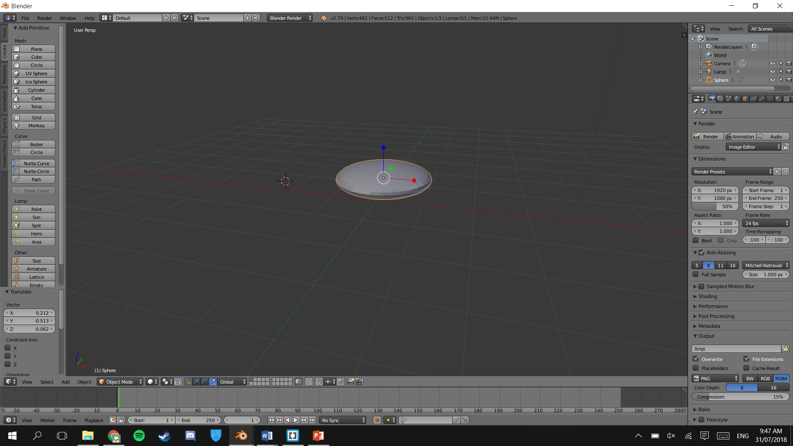

When I made my object I decided to use the object and transformation tools. I only used these two tools because I was brand new to the program I was using which was Blender and these were the easiest tools to use.
2 / 7
I started by deleting the cube and creating a UV Sphere
3 / 7

I then used object mode to change the width of the sphere to make it into the shape of a shield
4 / 7
I then rotated the object with object mode, so it is facing forward
5 / 7
I then added a spike to the middle of the shield by transforming it in edit mode
6 / 7
I also made the back of the shield brown to look wooden for added effected
7 / 7
I researched what some common shields looked like and decided to add red and black to the front of the shield, it was quite difficult to keep the spike silver while making the face black and red.